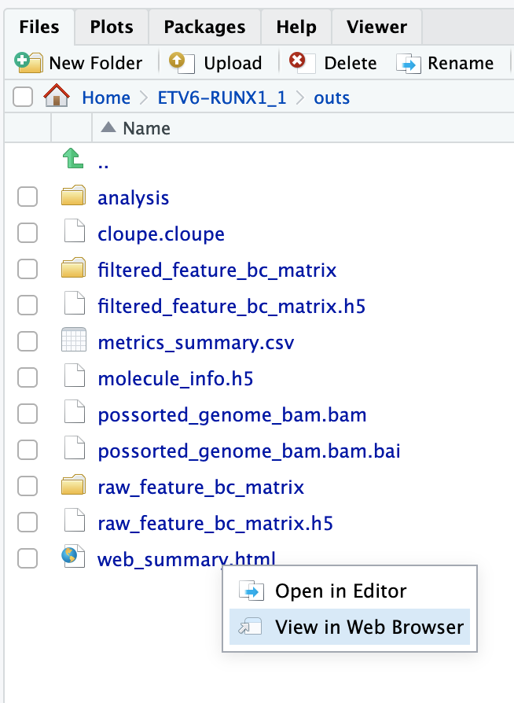

Introduction & cellranger
Learning outcomes
After having completed this chapter you will be able to:
- Explain what kind of information single cell RNA-seq can give you to answer a biological question
- Describe essential considerations during the design of a single cell RNA-seq experiment
- Describe the pros and cons of different single cell sequencing methods
- Use cellranger to:
- To align reads and generate count tables
- Perform basic QC on alignments and counts
Material
Introduction to scRNA-seq and techniques:
- Single cell introductory video on iBiology
- Seurat website
- Paper on experimental considerations
- Paper on experimental design
- SMART-seq3 protocol at protocols.io
cellrangersystem requirements and installation- Review by Tallulah Andrews
- Paper on correlation between mRNA and protein level in single cells
Running cellranger count
The exercises below assume that you are enrolled in the course, and have access to the Rstudio server. These exercises are not essential to run for the rest of the course, so you can skip them. If you want to do them anyway, you can try to install cellranger locally (only on Linux or WSL). In addition, you will need to download the references. You can get it by with this code (choose your OS):
wget https://single-cell-transcriptomics.s3.eu-central-1.amazonaws.com/cellranger_index.tar.gz
tar -xvf cellranger_index.tar.gz
rm cellranger_index.tar.gzDownload using the link, and unpack in your working directory.
This will download and extract the index in the current directory. Specify the path to this reference in the exercises accordingly.
Have a look in the directory course_data/reads and /data/cellranger_index. In the reads directory you will find reads on one sample: ETV6-RUNX1_1. In the analysis part of the course we will work with six samples, but due to time and computational limitations we will run cellranger count on one of the samples, and only reads originating from chromsome 21 and 22.
The input you need to run cellranger count are the sequence reads and a reference. Here, we have prepared a reference only with chromosome 21 and 22, but in ‘real life’ you would of course get the full reference genome of your species. The reference has a specific format. You can download precomputed human and mouse references from the 10X website. If your species of interest is not one of those, you will have to generate it yourself. For that, have a look here.
To be able to run cellranger in the compute environment, first run:
export PATH=/data/cellranger-9.0.1:$PATHHave a look at the documentation of cellranger count (scroll down to Command-line argument reference).
You can find the input files here:
- reads:
/home/rstudio/single_cell_course/course_data/reads/(from the downloaded tar package in your home directory) - pre-indexed reference:
/data/cellranger_index
Fill out the missing arguments (at FIXME) in the script below, and run it:
cellranger count \
--id=FIXME \
--sample=FIXME \
--transcriptome=FIXME \
--fastqs=FIXME \
--localcores=4 \
--create-bam=trueOnce started, the process will need approximately 15 minutes to finish. Have a coffee and/or have a look at the other exercises.
You can run a bash script or command using the terminal tab in Rstudio server:

cellranger count \
--id=ETV6-RUNX1_1 \
--sample=ETV6-RUNX1_1 \
--transcriptome=/data/cellranger_index \
--fastqs=/home/rstudio/single_cell_course/course_data/reads \
--localcores=4 \
--create-bam=trueHave a look out the output directory (i.e. ~/ETV6-RUNX1_1/outs). The analysis report (web_summary.html) is usually a good place to start.
You can use the file browser in the bottom right (tab “Files”) to open html files:

Have a good look inside web_summary.html. Anything that draws your attention? Is this report good enough to continue the analysis?
Not really. First of all there is a warning: Fraction of RNA read bases with Q-score >= 30 is low. This means that there is a low base quality of the reads. A low base quality gives results in more sequencing error and therefore possibly lower performance while mapping the reads to genes. However, a Q-score of 30 still represents 99.9% accuracy.
What should worry us more is the number of reads per cell (363) and the sequencing saturation (7.9%). In most cases you should aim for 30.000 - 50.000 reads per cell (depending on the application). We therefore don’t have enough reads per cell. However, as you might remember, this was a subset of reads (1 million) mapped against chromosome 21 & 22, while the original dataset contains 210,987,037 reads. You can check out the original report at course_data/count_matrices/ETV6-RUNX1_1/outs/web_summary.html.
For more info on sequencing saturation, have a look here.